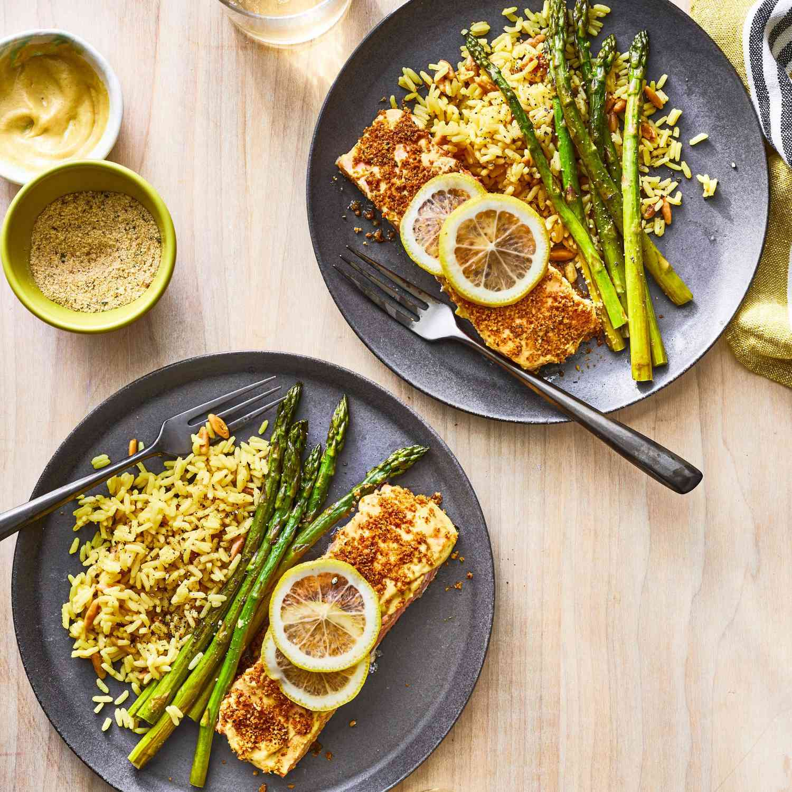

Dijon Baked Salmon Fillets

Description
These salmon fillets coated with Dijon mustard, seasoned bread crumbs,
then drizzled with butter make for a simple and delicious meal!
Ingredients
- 4 salmon fillets (4 oz.)
- 3 tbs. Dijon-style mustard
- salt and ground black pepper to taste
- ¼ cup Italian-style dry bread crumbs
- ¼ cup butter, melted
Steps
-
Gather all ingredients. Preheat the oven to 400 degrees F (200 degrees C).
Line a shallow baking pan with aluminum foil.
-
Place salmon fillets skin-side down on the prepared baking pan.
Spread a thin layer of mustard on top of each fillet; season with salt and pepper.
-
Top with bread crumbs, then drizzle with melted butter.
-
Bake in the preheated oven until salmon flakes easily with a fork,
about 15 minutes.
-
Serve and enjoy!
Source: allrecipes:
Baked Salmon Fillets Dijon